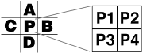

MacTech
Volume Number: 15 (1999)
Issue Number: 6
Column Tag: Programming Techniques
by Kas Thomas
Ironically, the main performance bottleneck for game programmers today - as ten years ago - is getting pixels up on the screen. With the advent of 100 MHz bus speeds, built-in hardware support for 2D/3D graphics acceleration, megabyte-sized backside caches, and superior floating-point performance, you'd think screen refresh rates would no longer be an issue. But as CPU and bus speeds have increased, so has monitor resolution - and pixel throughput. Providing the user with cinematic animation at full screen resolution remains a formidable challenge.
Because of human interface concerns, writing direct-to-screen has always been treated as something of a taboo in the Mac world. QuickDraw was invented to save us from having to resort to such low-level techniques. But there are still times when writing directly to video memory makes sense, particularly in game programming, where anything goes when it comes to user interface design. In this article, we won't shy away from direct-device writing or treat it as a taboo subject; in fact, we'll concentrate on it, with a view toward optimizing our code for the G3 (and soon, G4) chip architecture. We'll talk about assembly language, cache issues, line-skip blitting, and how to customize QuickDraw without patching any traps (among other subjects). In order to keep the pace brisk, we'll assume that you already know what a GWorld is, how to manipulate PixMaps, and the basics of display modes. If you need to brush up on these items, a good crash course can be found in Dave Mark's Mac Programming FAQs book (IDG Books, 1996).
First, let's summarize the basics. (If any of the following sounds unfamiliar, you should probably read up on video device fundamentals.) It should go without saying that maximizing screen drawing performance usually means taking advantage of one or more - or possibly all - of the following techniques:
The Mac's main general-purpose blit utility is, of course, QuickDraw's venerable CopyBits() routine. Because so many OS and user processes rely so heavily on it, and because the entire Mac user experience hinges on its performance, CopyBits() has been very highly optimized. The bottom line is that CopyBits() gives very good performance and is actually quite hard to improve upon, if it's used properly.
To get the best performance from CopyBits(), you have to observe a few ironclad rules:
First, make sure the source and destination rectangles are exactly the same dimensions. One of the capabilities CopyBits() was designed to offer is dynamic image resizing with dithering and antialiasing. (This can actually be a very handy thing, in situations where you care more about antialiasing than speed.) If you provide source and destination Rects that are different sizes, CopyBits() stretches or shrinks the output accordingly and antialiases the result. But this means taking a major speed hit. So if performance is critical, don't make QuickDraw "dither down" your image.
Secondly, use a nil maskRgn. Again, one of the general-purpose capabilities of CopyBits() is to allow on-the-fly masking of image areas. But this, too, exacts a speed penalty. If you must do masking via QuickDraw, use CopyMask(); don't pass a maskRgn to CopyBits(). You'll find that CopyMask() does much faster masked blits. (Trivia note: Don't forget that CopyMask is one of a handful of QuickDraw calls that cannot be "recorded" between calls to OpenPicture and ClosePicture. If you need to make a PICT, use CopyBits.)
Thirdly, be sure source and destination PixMaps are 32-bit (or better yet, 64-bit) aligned. They should also have the same pixel depth (same color mode). And your transfer mode should be srcCopy, which is a direct load-and-store mode, as opposed to the arithmetic modes that allow various types of pixel blending.
Finally, be certain that the color tables are the same for the source and destination PixMaps. CopyBits() always examines the ctSeed field of the source and destination color tables to see if they differ (in which case color-table mediation will be called for). For best performance, coerce the ctSeed field of the source and destination color tables to the same value, with the following ghastly but essential C expression:
(*( (*(srcPixMap) )->pmTable) )->ctSeed = (*( (*( (*aGDevice)->gdPMap) )->pmTable) )->ctSeed;
Remember that CopyBits() always checks these two seed values. If they are not the same, QuickDraw will waste time translating color table info, which you don't want.
If you observe the foregoing rules, you will find that CopyBits() is quite hard to improve upon as a general blit routine. Hard, but not impossible. It turns out that if you write directly to the screen yourself, bypassing CopyBits(), you can sometimes achieve a 5% to 10% speed gain - but only if you ignore color tables, write 8-byte doubles, stay on properly aligned addresses, and keep source and destination rectangles the same size (with the width a multiple of 8). In other words, you have to make your code a good deal less general than CopyBits().
Writing direct-to-screen on the Mac is not difficult. First you have to get the starting address of video memory, which can be done as follows:
PixMapHandle pmh; Ptr videoMemoryAddr; GDHandle mainDevice; mainDevice = GetMainDevice(); pmh = (**mainDevice).gdPMap; videoMemoryAddr = GetPixBaseAddr( pmh );
The Mac's screen is just a glorified PixMap, and a handle to this PixMap is contained in the the GDevice record of each display device (and in the GrafPort record of every open window, incidentally). For safety, use the MacOS function GetPixBaseAddr() to get the base address.
Next, figure out the offset from the top left corner of the screen to the top left corner of the area you want to begin writing to. Multiply the raster-line start position (the global 'y' coordinate) by the screen's rowBytes value; then, to offset horizontally, add the desired horizontal start position multiplied by the pixel size (which will be one byte for 8-bit color, two for 16-bit color, and four for 32-bit color; but the pixelSize field of the PixMap gives the size in bits, not bytes, so divide by 8). Let's say you want to write to a starting position (in global coords) of [64, 100], which is to say 64 pixels from the left edge of the screen and 100 pixels down from the top. For this, you would do:
long horizOffset = 64, verticalOffset = 100; Ptr writeAddr; writeAddr = videoMemoryAddr; // obtain screen origin address as shown above writeAddr += verticalOffset * ((**pmh).rowBytes & 0x3FFF); writeAddr += horizOffset * ((**pmh).pixelSize/8); // Note: PixelSize is in bits, not bytes. Divide by 8 to convert to bytes.
The rowBytes value tells you the number of bytes in one complete raster line, including any padding that QuickDraw might need for data alignment. The mask operation involving 0x3FFF requires a bit of explanation, if you're new to Mac programming. The first two bits of rowBytes are reserved for System use. The MacOS inspects these bit values to determine whether the pixel data are in the form of a black-and-white BitMap, or a true (color) PixMap. (This is an early Color QuickDraw hack, needed in order for PixMaps and BitMaps to be used interchangeably in Color QD routines. When the original B&W QuickDraw was first written, there were only BitMaps.) The important point is, don't forget to mask rowBytes against the hex value 0x3FFF in order to determine the true number of bytes in a raster line. If you fail to do this, you'll get strange bugs, because the raw value of rowBytes will usually be negative (rowBytes is a signed short int).
Once you've calculated a start address, you can write to it - preferably 64 bits at a time. Determine how many pixels' worth of data you'll need to write, horizontally, then loop through raster lines, writing 64 bits at a time, as shown in Listing 1.
FastBlit()
Note: On entry, this function expects source and destination pointers to be precalculated (to reflect the locations of the upper left corners of the source and destination "write" areas); no pointer arithmetic is done inside this function. Also note that the blit area's width (in bytes) must be evenly divisible by 8 - a concession to speed.
void FastBlit(long depth, long doublesWide,
Ptr GWorldAddr, Ptr screenAddr,
long offRowBytes, long screenRowBytes )
{
double *dst = (double *) screenAddr;
double *src = (double *) GWorldAddr;
long doublesAcross;
long screenSkip, offscreenSkip;
screenSkip = screenRowBytes/8 - doublesWide;
offscreenSkip = offRowBytes/8 - doublesWide;
do {
doublesAcross = doublesWide;
do {
*dst++ = *src++;
} while ( - doublesAcross) ;
src += offscreenSkip;
dst += screenSkip;
} while ( - depth);
}
In this scenario, GWorldAddr is the source address for an offscreen GWorld. There is no need to make local copies of the input parameters, since the compiler will pass the values in registers (assuming you're compiling to a PPC target, that is). We set up do while (rather than for or while) loops to achieve smaller, tighter executable code; and we cast our source and destination pointers to pointers-to-double so that we can write 64 bits at a time. We also take care to access data linearly, eliminating multiplications from our pointer arithmetic. Result: The code shown above is 5% to 10% faster than CopyBits(), depending on monitor mode and image dimensions. That's not much of a speed improvement, admittedly, but if you need it, it's there.
If you grew up writing code for CISC chips, it might seem as though the code in Listing 1 could be optimized a bit further. First, why not declare all local variables as register variables? Secondly, why not unroll the inner loop? For that matter, why not write the whole thing in assembly language?
The reason we don't declare any register variables in our blit routine is that the compiler already knows to put everything in registers. (If you don't believe it, do an assembly dump.) Using the "register" keyword gets us no additional speed because on the PowerPC, almost everything is done in registers by default. Recall that the PPC chips all have 32 general-purpose 32-bit registers and another 32 "wide" (64-bit) floating-point registers. The first 8 integer registers and 13 floating-point registers are available for argument-passing, and most compilers will pass function parameters in these registers rather than on the stack. Likewise, if there are less than 224 bytes of local variables inside a function, the compiler will try to put all local variables in registers. The stack is avoided at all costs, because it means going out to the data bus, which on many computers runs at only 25% of the CPU speed.
The fastest way for code to execute is for all data and all code to stay inside the CPU at all times, where things happen at clock speed. Toward this goal, the designers of the G3 (PPC 750 series) chips put 32K of data cache and 32K of instruction cache on board the chip itself, so that the most recently used code and data can be accessed at clock speed. Of course, 32K isn't big enough to hold all your code or all your data, which is why the chip designers put a generous secondary cache (typically 512K or 1Mb) on the back side of the chip - the so-called "backside" cache. This cache is big enough to hold quite a bit of data - even some entire images - but to access it requires that you step down to one-half CPU clock speed. That's a big speed hit, but it's still not as bad as having to go out to DRAM via the main bus. On most Macs these days, the bus runs at either 66 MHz or 100 MHz. If your CPU is constantly requesting data from RAM, your computer is essentially running at 66 or 100 Mhz, not the 300 or 400 MHz that the CPU may theoretically be capable of.
What it means is that you should group your main performance routines together, so that they stay in the cache; avoid static variables that require frequent trips to the bus; and be careful about unrolling loops. If you unroll a loop too far, it could fall out of the cache - in which case, you just scored a 50% speed hit.
Incidentally, if you want your routines to be close to each other in the cache, group them together sequentially in your C source. The Metrowerks compiler puts executables together in the order you write them. There is no need to use the segment pragma; in fact, that pragma only works when compiling to a 68K target.
Another important consideration on PPC targets is pipelining. The processing units of the G3 chips have separate facilities for fetching, decoding, and executing instructions. These facilities are designed to operate concurrently, which is to say that while one instruction is executing, the next one is being fetched and another one is being decoded - under ideal circumstances. When data and code can be fetched directly from the chip's onboard (32K) cache areas, circumstances are pretty close to ideal and the PPC pipeline can process one instruction per clock cycle. But when data has to be fetched from RAM via the bus, everything screetches to a halt as the CPU waits for data to arrive. This is called a pipeline stall.
A good compiler will analyze your code and anticipate possible pipeline stalls, then try to interleave or reorder instructions as needed to give the CPU something to do while data is being retrieved. But you can easily thwart the compiler's best efforts by, for example, insisting on putting one load/store operation after another after another in your code - i.e., by unrolling a data-copy loop.
Take our blit routine, for example. An assembly dump of the main loop from Listing 1 is shown in Listing 2. (For clarity, we've omitted half a dozen lines of setup code.) Note first of all that the assembly language for our nested double loop is only eleven lines long, which is not bad. (We save a few lines by using the do while construct in place of a for loop.) The first line is a register-move (mr) that loads our inner-loop counter variable into r8. The second line is a load-floating-double (lfd) instruction using the (source) address stored in r5. But notice one thing: The "write" (or store-floating-double: stfd) instruction doesn't occur until three lines later. In between the load and store instructions are an add-immediate (addi) and a subtract-immediate-with-carry (subic) operation. The add operation corresponds, of course, to a pointer post-increment in C, while the subtract-with-carry is a decrement of our loop counter. After the store operation comes another pointer post-increment (notice that the address is increased by 8, because we're operating on doubles), then the branch-if-not-equal instruction.
What's happened here is that the compiler has decided (quite correctly) that while the load instruction is executing, the processor might just as well do some pointer and loop-counter arithmetic before executing the store instruction, because the load will take a while (requiring a RAM access - or perhaps a backside-cache access). Since the chip has separate load/store and processing units, these operations can occur concurrently. In other words, the intervening arithmetic operations between the read (load) and write (store) cost us nothing. Meanwhile, the chip's branch unit has been watching the "carry bit" that was (or wasn't) set during the loop-counter decrement (the subic instruction), so that by the time we get to the branch point, the chip's branch unit already "knows" where to take us next. Thus, the branch costs us nothing. (On the PPC 750, the branch unit operates concurrently with processing units.) This is a good example of how instruction interleaving can be exploited for maximum performance on a PPC host. There are no pipeline stalls, because processing continues even while a RAM access is taking place.
FastBlit.asm
Note: This is PPC assembly code generated by Metrowerks compiler. Comments by the author. (See article text for discussion.)
00000020: mr r8,r4 ; loop counter setup 00000024: lfd fp0,0(r5) ; read from input 00000028: addi r5,r5,8 ; src pointer post-increment 0000002C: subic. r8,r8,1 ; decrement loop counter 00000030: stfd fp0,0(r6) ; write output 00000034: addi r6,r6,8 ; dst pointer post-increment 00000038: bne *-20 ; loop condition test 0000003C: add r5,r5,r7 ; pointer offset arithmetic 00000040: add r6,r6,r0 ; pointer offset arithmetic 00000044: subic. r3,r3,1 ; decrement loop counter 00000048: bne *-40 ; loop condition test
Now let's consider what happens when we try to unroll the loop. Take a look at Listing 3, which is an assembly dump of a version of Listing 1 in which the inner loop has been unrolled four times.
It may not seem like it at first, but this code is nowhere near as efficient as that of Listing 2. The reason is that the many close-together load/store operations are almost certain to generate pipeline stalls. A little profiling confirms that there is no speed gain from unrolling the loop.
UnrolledBlit.asm
Note: This is PPC assembly code generated by Metrowerks compiler. See article text for discussion.
00000018: mr r0,r4 0000001C: lfd fp0,0(r5) ; read 00000020: addi r5,r5,8 ; bump 00000024: stfd fp0,0(r6) ; write (stall) 00000028: addi r6,r6,8 ; bump 0000002C: lfd fp0,0(r5) ; read (stall) 00000030: addi r5,r5,8 ; bump 00000034: stfd fp0,0(r6) ; write (stall) 00000038: addi r6,r6,8 ; bump 0000003C: lfd fp0,0(r5) ; read (stall) 00000040: addi r5,r5,8 ; bump 00000044: stfd fp0,0(r6) ; write (stall) 00000048: addi r6,r6,8 ; bump 0000004C: lfd fp0,0(r5) ; read (stall) 00000050: addi r5,r5,8 ; bump 00000054: stfd fp0,0(r6) ; write (stall) 00000058: addi r6,r6,8 0000005C: subic. r0,r0,1 00000060: bne *-68 00000064: slwi r0,r7,3 00000068: add r5,r5,r0 0000006C: slwi r0,r8,3 00000070: add r6,r6,r0 00000074: subic. r3,r3,1 00000078: bne *-96
Most of the time, you'll be hard pressed to beat CopyBits(). But if you do manage to beat CopyBits(), you can (and should) consider installing your own blit routine as a QuickDraw bottleneck proc, replacing CopyBits(). Maybe you didn't know it, but QuickDraw is extensible (thanks to some nice design work, circa 1983, by Bill Atkinson). There are 13 low-level "bottleneck" functions that QuickDraw uses to do things like draw lines, rectangles, ovals, etc. (See Table 1.) One of the standard bottleneck primitives is called StdBits(). This is the low-level blit function that CopyBits() ultimately vectors to. You can install your own replacement function here, and QuickDraw will automatically vector to it when your program needs to call on CopyBits(). This is similar to patching a trap, except that Apple (or Atkinson) designed the QD bottleneck jump table to be wholesale-replaceable on a window-by-window basis. By "wholesale-replaceable," we mean that the entire jump table (containing addresses for all of the QD drawing primitives) can and indeed must be replaced at once. The relevant data structure is the CQDProcs struct (see Listing 4).
Table 1: QuickDraw Bottleneck Proc Prototypes
pascal void StdText(short byteCount, Ptr textBuf, Point numer, Point denom); pascal void StdLine(Point newPt); pascal void StdRect(GrafVerb verb, const Rect *r); pascal void StdRRect(GrafVerb verb, const Rect *r, short ovalWidth, short ovalHeight); pascal void StdOval(GrafVerb verb, const Rect *r); pascal void StdArc(GrafVerb verb, const Rect *r, short startAngle, short arcAngle); pascal void StdPoly(GrafVerb verb, PolyHandle poly); pascal void StdRgn(GrafVerb verb, RgnHandle rgn); pascal void StdBits(const BitMap *srcBits, const Rect *srcRect, const Rect *dstRect, short mode, RgnHandle maskRgn); pascal void StdComment(short kind, short dataSize, Handle dataHandle); pascal short StdTxMeas(short byteCount, const void *textAddr, Point *numer, Point *denom, FontInfo *info); pascal void StdGetPic(void *dataPtr, short byteCount); pascal void StdPutPic(const void *dataPtr, short byteCount);
struct CQDProcs {
QDTextUPP textProc;
QDLineUPP lineProc;
QDRectUPP rectProc;
QDRRectUPP rRectProc;
QDOvalUPP ovalProc;
QDArcUPP arcProc;
QDPolyUPP polyProc;
QDRgnUPP rgnProc;
QDBitsUPP bitsProc;
QDCommentUPP commentProc;
QDTxMeasUPP txMeasProc;
QDGetPicUPP getPicProc;
QDPutPicUPP putPicProc;
QDOpcodeUPP opcodeProc;
UniversalProcPtr newProc1;
UniversalProcPtr newProc2;
UniversalProcPtr newProc3;
UniversalProcPtr newProc4;
UniversalProcPtr newProc5;
UniversalProcPtr newProc6;
};
typedef struct CQDProcs CQDProcs, *CQDProcsPtr;
Installing a custom bottleneck proc is actually quite simple. Listing 5 shows how it's done. The key is to realize that every window has its own set of bottleneck procs, accessible through the grafProcs field of the GrafPort structure. You replace the entire bottleneck jump table (containing pointers to all 13 low-level drawing functions) all at once, even if you only need to customize just a single bottleneck procedure. When you no longer need your custom bottlenecks, simply nil out the grafProcs field of the window's GrafPort structure, and QuickDraw will know to revert to its own default proc table.
SetupCustomBottleneck()
A function to attach a new set of QuickDraw procs to a window.
CQDProcs qdNewProcs; // globals
void SetupCustomBottleneck( CWindowPtr w) {
SetStdCProcs( &qdNewProcs ); // fetch copy of default procs
// Now replace CopyBits with our own custom routine:
qdNewProcs.bitsProc = NewQDBitsProc( CustomBlit );
w->grafProcs = &qdNewProcs; // install new procs
}
CustomBlit()
WARNING: This is a custom routine that expects screen to be in 8-bit color mode; also, image must be 640x480. These numbers are hard-coded for speed. This is NOT a general-purpose routine. Use with caution.
void CustomBlit(BitMap *srcBits,
Rect *srcRect,
Rect *dstRect,
short mode,
RgnHandle regionH)
{
#pragma unused (srcRect,dstRect,mode,regionH)
double *dst;
double *src = (double *) srcBits->baseAddr;
long rows;
long yeaManyAcross;
long srcSkip, dstSkip;
// The following have all been previously cached in globals:
dst = gDestAddr;
rows = gRows;
srcSkip = gSrcSkip;
dstSkip = gDestSkip;
// * * * * * * * * * * * BEGIN BLIT * * * * * * * * * * *
do {
yeaManyAcross = 640/8;
do {
*dst++ = *src++;
} while ( - yeaManyAcross );
dst += dstSkip;
src += srcSkip;
} while ( - rows );
// * * * * * * * * * * END BLIT * * * * * * * * * * *
}
Listing 6 shows a custom blit routine, hard-coded as to window dimensions and bit depth, with certain key parameters pre-cached in globals. (With any luck, those values will stay in the data cache - or else the backside cache - for fast access when you most need them.) You can think of these globals as your very own "QuickDraw globals."
You may have noticed that the arguments to QuickDraw's low-level grafProcs don't include a destination address. That's because the procs apply only to the current window (the current GrafPort). It's assumed that you're writing into the current port. Remember, at this low level, there's no need to call SetPort()!
Using hard-coded values in a low-level routine without error checking is obviously somewhat dangerous, but it's necessary if you want maximum speed. Plus, you have to remember that for greater flexibility, you can - and should - develop multiple custom-draw functions, tailored to various circumstances, so that you can vector to the right one at the appropriate moment. Also, it's good to know that QuickDraw will use your custom blitter only in the window you specify. (Again, every window or GrafPort has its own grafProcs.) Thus, if the user temporarily leaves your game in order to visit the Finder or another application, the other application(s) will still draw correctly into their own windows. Likewise, if the user leaves the main gameplay window to look at a dialog window in your own program, the dialog will draw correctly, using QuickDraw's default proc table.
Bear in mind that you can replace any of the QuickDraw primitives you need to. For example, if your game could benefit from a special arc-drawing routine, you can install your own arcProc. If you've got something better or faster than the Bresenham algorithm, you can install your own ovalProc and/or lineProc, etc.
One of the benefits of replacing QuickDraw's grafProcs is that it lets you keep using native QD calls like LineTo and CopyBits in your code. This helps with code reusability as well as readability. After you've installed your own custom blitter in place of CopyBits, you can just keep calling CopyBits throughout your code. If you come up with a better blitter later on, you can update your code just by changing one grafProc pointer.
If you're looking for more than just a small incremental improvement over CopyBits (i.e., you want to be able to blit hundreds of 640x480-or-larger frames per second), you'll need to resort to extreme measures - such as (for example) line-skip drawing and/or pixel doubling.
To implement line-skip drawing (interlacing), you can just add a few lines of code to the custom blitter in Listing 1:
if (gPolarity++ & 1L == 1L)
{ src += offRowBytes/8; dst += screenRowBytes/8; }
screenSkip += screenRowBytes/8;
offscreenSkip += offRowBytes/8;
These lines should go immediately before the main (outer) loop. The static or global variable gPolarity will keep an "odd-even" counter going, the idea being that on odd-numbered calls to the blitter, you'll offset the source and destination pointers one raster line deep into the image. And every time the routine is called, you'll calculate the "skip" values to include one extra raster line, so that you draw every other line of the image. When you do this, of course, your redraw rate doubles, because now you're handling only half as many bytes of data.
The interlaced redraw technique works very well for underlays and slow-moving objects, but as you can probably imagine, it will yield ghosting artifacts if the object that's being drawn is moving across the screen at an appreciable rate. (With a little ingenuity, you can probably think of workarounds for this - or maybe put the effect to good use.)
Another common speed-multiplying technique is pixel doubling, which is where each pixel of the source image (whether it's a sprite, icon, underlay image, or whatever) is drawn as a 2x2 tile onscreen. Essentially, you're scaling a quarter-size image up to full size - hence, the potential exists for a 4:1 speed boost. The downside to this technique is that it gives a "chunky pixel" look that can be annoying; but there happens to be a useful workaround, in the form of the 'epx' antialiasing technique pioneered by LucasArts' Eric Johnston. Figure 1 shows how it works.

The problem is this: how to scale pixel 'P' to be four times its original size, but without all four new pixels necessarily being the same color. (We want some antialiasing.) In Figure 1, the tic-tac-toe grid on the left represents the pixel 'P' and its north, south, east, and west neighbors in the source (offscreen buffer) image. The 2x2 tile on the right represents the new (onscreen) pixels, which will derive from P. The question is how to color P1, P2, P3, and P4 without giving the "chunky pixel" look.
The answer is to base P1 on the back-buffer pixels 'A' and 'C'; base P2 on 'A' and 'B'; base P3 on 'C' and 'D'; and base P4 on 'D' and 'B'. We say that 'A' and 'C' are the "parents" of P1, 'D' and 'B' are the parents of P4, etc., and likewise, P1 is the child of 'A' and 'C', and so forth. The rule to follow is this: If any two parents are equal in color, then make the child that color. Otherwise, let the child be the color of 'P'. Also, if at least three of the parents (A, B, C, D) are identical, do nothing: just let P1 = P2 = P3 = P4 = P. (Johnston discusses this technique on page 692 of Tricks of the Mac Game Programming Gurus, Hayden Books, 1995.)
The 'epx' technique is not written in stone; you can and should experiment with modifications to it, to suit your game's graphics. It's more of an ad hoc heuristic than a theory-based algorithm. But it gives worthwhile results. Many shipping games use this cheap, easy AA technique.
An even more extreme way of speeding things up is to store your graphics in a highly compressed state and decompress them to the screen at blit time. This is the basis of most "byte-packed" or "run length" sprite drawing techniques. It's also how QuickTime gets much of its speed.
Imagine, for a moment, that you could store all of your game's static graphics (backgrounds, underlays, sprites of fixed dimensions, etc.) in 10:1 or 20:1 compressed form, in RAM; then, when you need to draw them, you send the compressed data over the bus to video memory, and have the image(s) decompress-to-screen with the aid of hardware support on the video board. This is exactly what happens on many accelerator boards that support QuickTime, and according to Dispatch No. 8 from the Ice Floe (Apple's Quicktime tech notes, available online in the QuickTime area of Apple's developer pages), you can take full advantage of this technique - hardware permitting - by simply using QuickTime's DecompressImage() call in place of CopyBits. Full details are available at <http://www.apple.com/quicktime/developers/icefloe/dispatch008.html>.
If you're serious about obtaining better screen-redraw performance - whether for a game or for any other purpose - you owe it to yourself to investigate Apple's DrawSprocket library (see http://developer.apple.com/games/sprockets). The DrawSprocket routines are extremely logical and easy to use, and they greatly simplify things like blanking and restoring the screen (including the desktop and menu bar), setting the color depth, implementing gamma fades, double and triple buffering, blitting at controlled cinematic rates, etc. Also, the DrawSprocket library takes advantage of hardware support for page-flipping when available. Sprocket blitting is so efficient, you probably won't gain anything by installing a custom blit routine of your own (unless you're into extreme techniques), because the sprocket library will use a highly customized routine - customized for the exact graphic environment of your game.
For a variety of reasons, you should make it a point to investigate the DrawSprocket library, which is the "drawing" portion of Apple's Game Sprockets. (There are other sprockets for audio, networking, etc. - all of them royalty-free).
Although we didn't have time to discuss it, many of the techniques mentioned in this article are used in a small Metrowerks C code project called BlitsKrieg developed for this article and available online at <ftp://www.mactech.com>. Be forewarned that BlitsKrieg is simply a no-frills test program that draws a PICT to the screen numerous times, and reports the elapsed time in ticks. There is no event loop, no menu bar, etc. It's strictly a quickie prototype for testing different blit techniques, but it does contain example code showing how to replace CopyBits with a custom routine, how to do interlaced blits, and how to call QuickTime's DecompressImage. Use at your own risk.
In conclusion, I'd like to reiterate a bit of advice once given to me by a mentor who was (and still is) a ninja-level master at making code go fast. His chief insight, which I have benefitted from many times, is that since the CPU can only execute a fixed number of instructions per second, and no more than that number, there is really no such thing as "making the machine go faster." There is only such a thing as making the machine do less.
To go faster, do less. Remember that, next time you're slamming dumptruck-loads of pixels to the screen.
Kas Thomas <tbo@earthlink.net> has been a Macintosh user since 1984 and has been programming in C and assembly on the Mac since 1989. He is working on a variety of After Effects plug-ins and would like to hear from anybody who is doing the same.